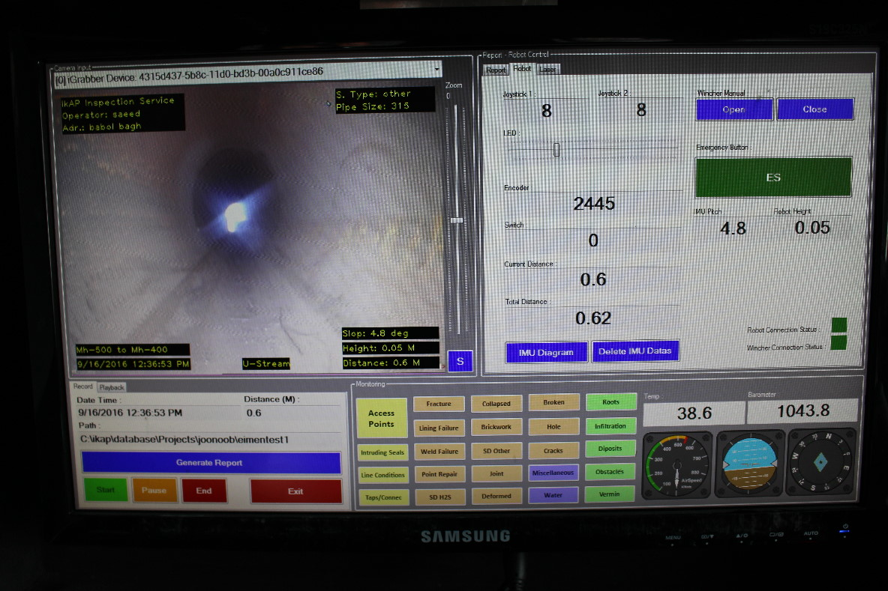

I KAP Robotics laboratories, began it’s activity in the year 2011. IKAP initially started it’s work with the goal of designing and producing hazardous environment robotics; for use in oil and gas pipe network, oil reservoirs and sewer systems. Since IKAP was founded in 2011, it has successfully managed to cooperate with more than 20 different public and private sector companies. During this period more than 5 different robots were designed as custom projects ordered by their customers.
Sewer Pipe Inspection Robot
Advanced condition assessment is the application of industry leading measurement technologies for the purpose of objectively determining the condition of pipe infrastructure. Wicam Technology currently employs 4 sensors: CCTV, LiDAR, Sonar, and PPR. These sensors are most commonly deployed via remotely operated vehicles (ROVs) or custom built inspection platforms.
Wicam, Portable Pipe Inspection Robot
Wicam robot can be used to inspect pipeline networks and is equipped with four wheel drive mechanism. It is designed and manufactured based on wicam robotic platform. This robot has the ability to move properly and effectively in pipeline networks and simultaneously send its inspection information to the inspection software. The main design purpose of this robot is to carry out special inspection missions in water and sewer industries in accordance to their current standards.
"In IKAP we believe in improving the hidden challenges and difficulties of today's busy, day to day life. Complex challenges that are difficult to identify in the first place. Our answer to complexities: simplicity."
My responsibilities in project:
- Groundstation GUI designer and developer
- Groundstation Backend developer
- Development of DCM (Device Communication Manager)
- Inspection reporting,monitoring and visualization modules
For more information please visit the IKAP robotics official webpages :
http://www.ikaprobotics.comWICAM2 GUI and monitoring system